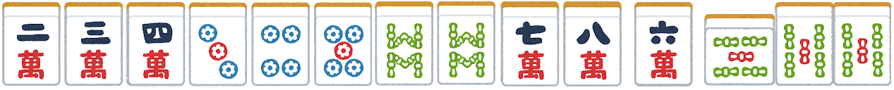

タンヤオ
シンプルながら強力な役
タンヤオとは？
中張牌（数牌の2から8までの牌）のみを使ってアガる役です。字牌（東、南、西、北、白、發、中）や1、9の数牌を一切使わずに面子と雀頭を完成させます。
食いタン（鳴いて作ったタンヤオ）がアリかナシかは、ルールによって異なります。一般的なフリー麻雀ではアリのことが多いです。
成立条件
- 手牌に1、9の数牌と字牌が一切含まれていないこと。
- 2から8までの数牌のみで構成されていること。
タンヤオのメリット
タンヤオは、以下のようなメリットがあります。
- 1翻役として認められる。
- 鳴いて（ポン、チー）も成立する（食いタンアリの場合）。
- 比較的作りやすく、他の役との複合もしやすい。